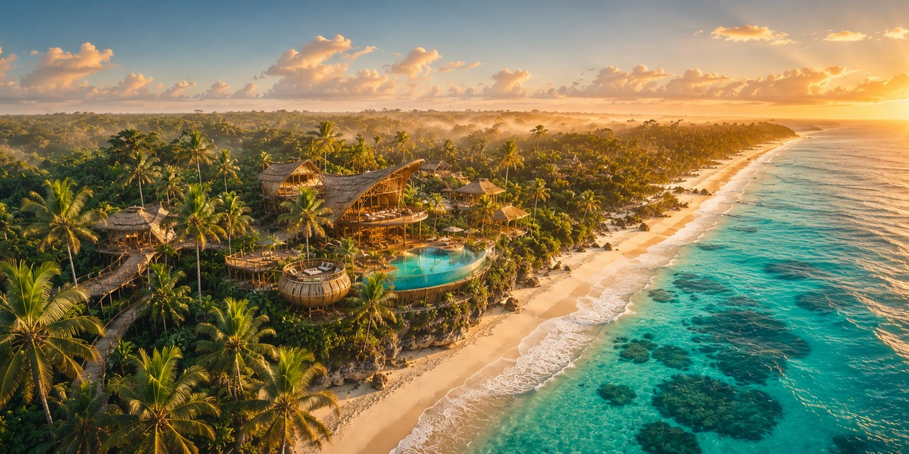
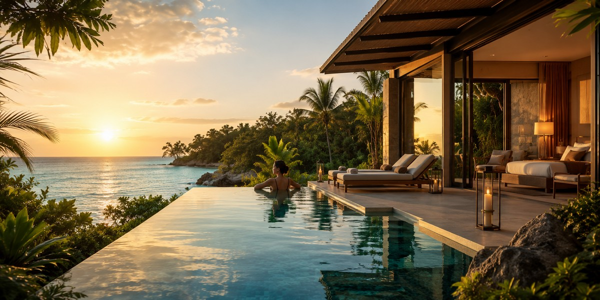
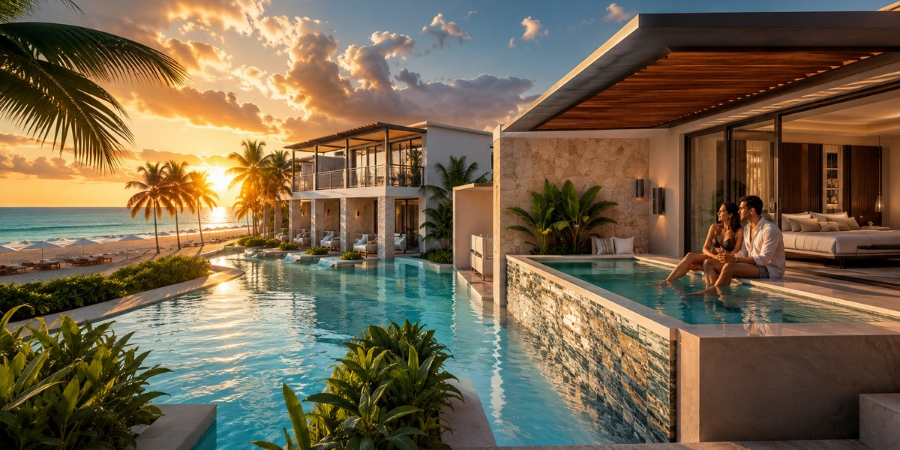
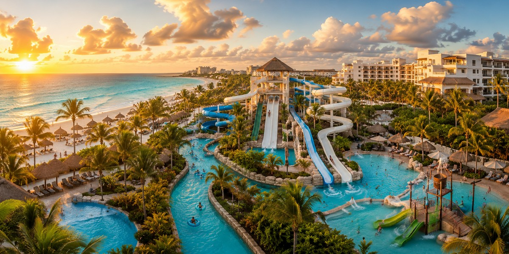
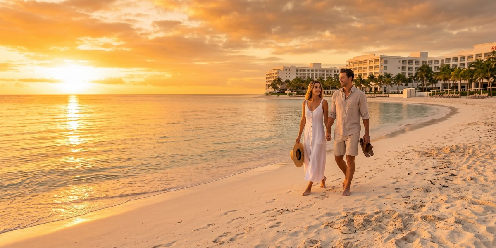

Ривьера-Майя: Канкун, Плая и Тулум
Как устроены Канкун, Плая-дель-Кармен, Тулум и resort-зоны — карта, которую стоит прочитать до выбора отеля.

Осознанный выбор направлений, отелей и формата отдыха — без ошибок и переплат.
Выбрать страну →Три принципа, которые помогают выбирать отдых осознанно.
Ищем повторяющиеся жалобы и совпадения в отзывах, а не ориентируемся только на общий рейтинг.
Оцениваем рельеф, расстояние до пляжа и реальное расположение отеля через карту и фото гостей.
Проверяем налоги, курортные сборы и условия отмены, чтобы видеть реальную цену отдыха.
Сейчас главный фокус — Мексика, а Египет и Турция остаются как дополнительные разделы
Гиды по курортам и отелям Мексики
Канкун, Плая-дель-Кармен и Тулум
Планирование поездки без ошибок бронирования
Гиды по курортам Красного моря
Перелёты, отели и подготовка к поездке
Курорты, пляжи и практические советы
Гиды по Стамбулу и морским курортам
Районы, отели и планирование поездки
Умный выбор курорта и локальные советы
Впервые на Ривьере-Майя? Сначала прочитайте хаб — он раскладывает все гайды по решениям, которые вы принимаете. Затем выберите точку старта ниже.
Открыть хаб «Ривьера-Майя» →
Как устроены Канкун, Плая-дель-Кармен, Тулум и resort-зоны — карта, которую стоит прочитать до выбора отеля.

Честный разбор с упором на решение: куда поехать в первую карибскую пляжную поездку и кому подходят Канкун, Ривьера-Майя, Тулум и Пунта-Кана.

Перед бронированием: район, тип пляжа, отзывы, реальная итоговая цена, номер, формат курорта и красные флаги отмены.

Сухой сезон, цены, толпы и саргассум по месяцам — лучшее время для новичков, семей и бюджетных поездок.

Реалистичный бюджет на 2026 год в трёх форматах — перелёты, отели, еда и скрытые расходы.

Что на самом деле означают предупреждения США и Канады, какие повседневные риски важнее всего и как избежать редких проблем у туристов.

Какие эко-курорты Тулума предлагают настоящий кондиционер, а какие — полный детокс при свечах и на солнечной энергии, и кому лучше их пропустить. Честный гид по выбору.

Выбирайте настоящий роскошный курорт по тому, что он реально предлагает: приватность Mayakoba, пляж Belmond Maroma или спа и лагуна Nizuc, а не просто по высокой цене за ночь.
Не каждый отель, названный «pet-friendly», является таковым. Сравните реальные правила, сборы, доступ к пляжу и реалии жаркого климата в Канкуне, Тулуме и Плая-дель-Кармен перед бронированием.
Выберите отель для пар в Плая-дель-Кармен по зоне, уровню шума, пляжу и доступности: спокойствие в Playacar, баланс у пляжа или романтика бутик-отелей в центре.

Номер swim-up, частный plunge-бассейн или вилла? Выбирайте по уровню приватности, стоимости и расположению, а не по красивым фото.

Выбирайте отель с настоящим аквапарком по размеру, ленивой реке, ограничениям по росту и цене, от Seadust в Канкуне до All-Fun Inclusive в Xcaret.

Выберите бюджетный all-inclusive в Канкуне по уровню цен и пляжной зоне: чем вы жертвуете, что сохраняете, и когда самая низкая цена — это ловушка.
Выберите курорт в Ривьере-Майе, где снорклинг на рифе — в нескольких шагах от номера: Пуэрто-Морелос, Косумель или Акумаль, а не Hotel Zone Канкуна.

Выбирайте велнес-курорт по формату ретрита, району, пляжу, бюджету и тому, что действительно включено в стоимость, а не просто по наличию спа-меню на сайте.
Travel Radar LK — независимый проект для тех, кто хочет планировать поездки осознанно. Главный фокус сейчас — Мексика и Карибы, а материалы по Египту и Турции остаются как дополнительные полезные разборы. Мы делаем практичные статьи, сравнения локаций и честные travel-разборы без лишнего шума.
Если где-то на сайте есть партнёрские ссылки, мы отмечаем это напрямую. Подробнее о проекте →